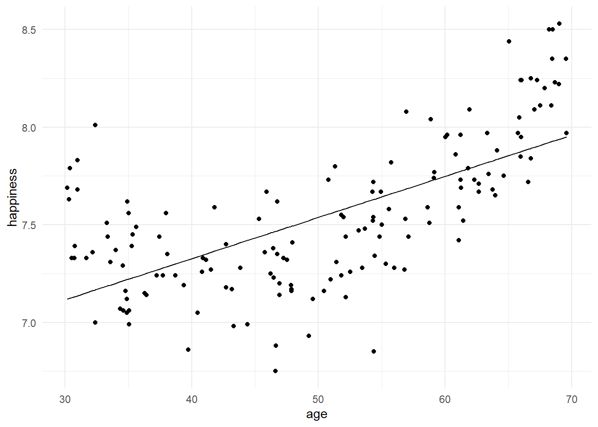

Linear regression
Run a linear regression to determine whether happiness can be predicted from age:
model1 <- lm(happiness ~ age, data = SurveyData)
summary(model1)
>
> Call:
> lm(formula = happiness ~ age, data = SurveyData)
>
> Residuals:
> Min 1Q Median 3Q Max
> -0.78019 -0.16858 -0.04762 0.19811 0.84368
>
> Coefficients:
> Estimate Std. Error t value Pr(>|t|)
> (Intercept) 6.484101 0.102340 63.36 <2e-16 ***
> age 0.021076 0.001979 10.65 <2e-16 ***
> ---
> Signif. codes: 0 '***' 0.001 '**' 0.01 '*' 0.05 '.' 0.1 ' ' 1
>
> Residual standard error: 0.2912 on 148 degrees of freedom
> Multiple R-squared: 0.4339, Adjusted R-squared: 0.4301
> F-statistic: 113.5 on 1 and 148 DF, p-value: < 2.2e-16Write the regression equation for predicting happiness from age, using the values from the Estimate column.
The regression equation is:
Predicted happiness = 6.48 + 0.02*age
The following parts of the output tell us how well the model explains the data:
Multiple R-squared (\(R^2\)) is the proportion of variance in the outcome variable (happiness) that can be accounted for by the regression model. It gives us some idea of how well our model explains the data. If we multiply the value by 100, we get a percentage. Therefore, in this model,
ageexplains 43.4% of the variance inhappinessscores.The F-statistic gives us an idea of how much variance in happiness the model explains, relative to how much variance in happiness it does not explain (i.e., the error in prediction or residuals). There are two separate degrees of freedom associated with the F-statistic (1, 148).
A p-value associated with F is also given. This is the probability of obtaining an F-statistic as extreme as this, given that the null hypothesis is true. Given that our p-value is less than .05, we can declare age to be a statistically significant predictor of happiness, and could report F as follows:
- Age is a statistically significant predictor of happiness, F(1,148) = 113.00, p < .001.
Now let’s see how well the happiness values predicted by the regression equation match the trends in our data. Plot the regression line from model1 on the same plot as the data:
SurveyData %>% mutate(fit1 = fitted(model1)) %>%
ggplot(aes(x=age, y=happiness)) +
geom_point() +
geom_line(aes(y=fit1))
The above code uses the mutate function from the dplyr package to add an additional column named fit1 to the SurveyData. fit1 contains the values of happiness that are predicted by the model, given each individual’s age.
An alternative way to plot this graph, consistent with the session on regression, would be to use the augment() function in the broom package.
broom::augment(model1) %>% ggplot(aes(x=age, y=happiness)) +
geom_point() +
geom_line(aes(y=.fitted))
.fitted are the predicted values computed by augment()
By visual inspection, does the model capture the trend in the data well?
According to the model, happiness increases with age in a linear fashion. However, it is clear from the plot that this straight line is not capturing the non-linear trend that is evident in our data.